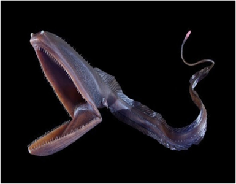

СЕМЕЙСТВА Большеротовых (Eurypharyngidae)
ГЛУБИНА:от 500 до 3000 метров
КОГДА ОТКРЫЛИ: описан французским зоологом Леоном Вайяном в 1882 году
ТИП ПИТАНИЯ:питающийся ракообразными, мелкой рыбой и кальмарами
ПОВЕДЕНИЕ:
ПОВЕДЕНИЕ:Он плавает с огромной открытой пастью, действующей как сачок, или приманивает добычу светящимся кончиком хвоста. Благодаря растягивающемуся желудку, заглатывает жертв крупнее себя. Малоподвижен из-за слабой мускулатуры, обитает в вечной темноте.
ПИТАНИЕ И ОХОТА: Пасть, похожая на мешок пеликана, позволяет захватывать планктон, рыбу и кальмаров. В отличие от активных хищников, часто просто дрейфует с открытым ртом, позволяя течению загонять пищу внутрь. На конце хвоста имеется светоизлучающий орган (фотофор), который используется как приманка,чтобы привлечь жертву ближе к пасти.
АДАПТАЦИЯ К ГЛУБИНЕ :Имеет слабое тело, редуцированный плавательный пузырь и крошечные глаза, компенсируя их чувствительными рецепторами для обнаружения движения в темноте.
Уникально тем, что после нереста взрослые особи, вероятно, погибают. Самцы при созревании претерпевают метаморфозы (уменьшение зубов, увеличение обонятельных органов для поиска самок)

наверх